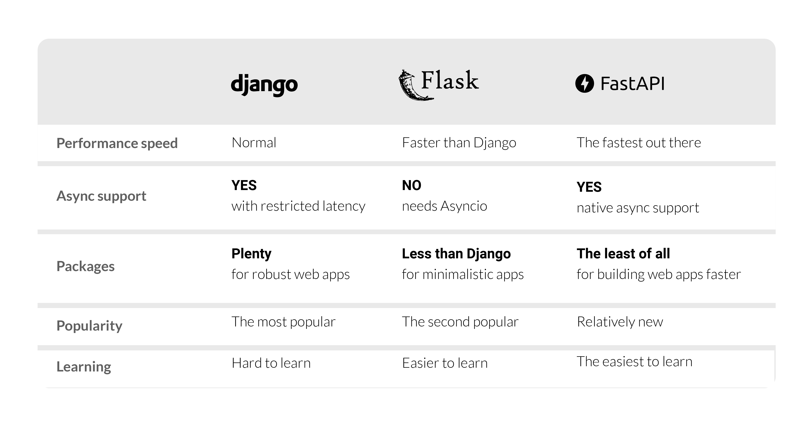

Summary
FastAPI
- 최근 떠오르는 Python Web Framework
- API document 작성을 자동으로 해주는 Swagger
- 간결한 코드 작성
- 빠른 속도

출처 - https://quintagroup.com/services/python/fastapi
Path Parameter, Query Parameter
- 웹에서 get method를 사용해 데이터를 전송할 수 있음
- ID가 402인 사용자 정보를 가져오고 싶은 경우
Path Parameter 방식
/users/402
- 서버에 402라는 값을 전달하고 변수로 사용
Query Parameter 방식
/users?id=402
- Query String
- API뒤에 입력 데이터를 함께 제공하는 방식으로 사용
- Query String은 Key, Value의 쌍으로 이루어지며 &로 연결해 여러 데이터를 넘길 수 있음
Path vs Query
- 언제 어떤 방식을 사용해야 할까?
- 상황마다 다름
Example1)
- 어떤 리소스를 식별하고 싶은 경우(그러나 kyle이라는 유저가 없음)
- Path : /users/Kyle
- 경로에 존재하는 내용이 없으면 404 에러 발생
- Query : /users?name=kyle
- 데이터가 없는 경우 빈 리스트 -> 추가적인 에러 핸들링
보편적인 경우
- 리소스 식별 : Path parameter가 적합
- 정렬, 필터링 : Query parameter가 적합
Path Parameter
- GET method : 정보를 Read하기 위해 사용
- 유저 정보에 접근하는 API
1
2
3
4
5
6
7
8
from fastapi import FastAPI
import uvicorn
app = FastAPI()
@app.get("/users/{user_id}")
def get_user(user_id):
return {"user_id": user_id}
- FastAPI는 데코레이터로 GET, POST 표시
- @app.get, @app.post
- GET method의 인자로 있는 {user_id}가 함수의 값으로 인풋
Query Parameter
- URL뒤에 ? 붙이고 Key, Value 형태로 연결
- Localhost:8000/items/?skip=0&limit=10
uvicorn main:app --reload
1
2
3
4
5
6
7
8
9
10
11
from fastapi import FastAPI
import uvicorn
app = FastAPI()
# DB 같은 느낌으로 사용
fake_items_db =[{"item_name": "Foo"}, {"item_name": "Bar"}, {"item_name": "Baz"}]
@app.get("/items/")
def read_items(skip: int = 0, limit: int = 10):
return fake_items_db[skip:skip+limit]
Optional Path
- 특정 파라미터는 선택적으로 사용하고 싶은 경우
- Typing 모듈의 Optional 사용
- Optional을 이용해 이 파라미터는 Optional 임을 명시
Request Body
- 클라이언트에서 API에 데이터를 보낼 때 request body 사용
- client -> API : request body
- API response -> client : response body
- Request body에 데이터가 항상 포함되어야 하는 것은 아님
- Request body에 데이터를 보내고 싶다면 POST Method 사용
- GET Method는 URL, Request header로 데이터 전달
- POST Method는 Request body에 데이터를 넣어 보냄
- Body의 데이터를 설명하는 content-type Header field 존재, 데이터 타입 명시 해야함
- Application/x-www-form-urlencoded: BODY에 Key, Value 사용
- Text/plain : 단순 txt 파일
- Multipartform-data : 데이터를 바이너리 데이터로 전송
1
2
3
4
5
6
7
8
9
10
11
12
13
14
15
16
17
from typing import Optional
from fastapi import FastAPI
import uvicorn
from pydantic import BaseModel
class Item(BaseModel):
name: str
description: Optional[str] = None
price: float
tax: Optional[float] = None
app = FastAPI()
@app.post("/items/")
def create_item(item: Item):
return item
- POST 요청으로 item을 생성하는 예제
- pydantic으로 request body 데이터 정의
- Type hinting에 위에서 생성한 클래스 주입
- request body 데이터를 validation
Response Body
- API response -> client : response body
- 데코레이터의 response_model 인자로 주입 가능
1
2
3
4
5
6
7
8
9
10
11
12
13
14
15
16
17
18
19
20
21
22
from typing import Optional
from fastapi import FastAPI
import uvicorn
from pydantic import BaseModel
class ItemIn(BaseModel):
name: str
description: Optional[str] = None
price: float
tax: Optional[float] = None
class ItemOut(BaseModel):
name: str
price: float
tax: Optional[float] = None
app = FastAPI()
@app.post("items/", response_model=ItemOut)
def create_item(item: ItemIn):
return item
- Output 데이터를 해당 정의에 맞게 변형
- 데이터 validation
- response에 대한 JSON Schema 추가
- 자동으로 문서화
Form
- Form 입력 형태로 데이터를 받고 싶은 경우
- Form을 사용하려면
pip install python-multipart으로 설치- +간단한 프론트를 위한
pip install Jinja2
- +간단한 프론트를 위한
1
2
3
4
5
6
7
8
9
from fastapi import FastAPI, Form
import uvicorn
app = FastAPI()
@app.post("/login")
# Form에서 입력된 값을 가져와서 사용한다
def login(username: str = Form(...), password: str = Form(...)):
return {"username": username}
- Form 클래스를 사용하면 request의 form data에서 값을 가져옴
- Localhost:8000/login/ 으로 이동
- login으로 접근해서 GET method가 요청됨
1
2
3
4
5
6
7
8
9
10
11
12
13
14
15
from fastapi import FastAPI, Form, Request
from fastapi.templating import Jinja2Templates
import uvicorn
app = FastAPI()
template = Jinja2Templates(directory="./")
@app.get("/login/")
def get_login_form(request: Request):
# login_form.html for frontend login page
return template.TemplateResponse("login_form.html", context={"request": request})
@app.post("/login/")
def login(username: str = Form(...), password: str = Form(...)):
return {"username": username}
- login_form.html 로 login 페이지 구성
- 제출을 누르면 login 함수 실행(POST 요청)
- Form(…) -> Python ellipsis, 필수적인 요소를 의미
- FastAPI 웹 서버 실행 후 Swagger로 이동하면 required를 볼 수 있음
File
- File 업로드의 경우
- Python-multipart 설치 필요
1
2
3
4
5
6
7
8
9
10
11
12
13
14
15
16
17
18
19
20
21
22
23
24
25
26
27
28
29
30
31
32
from typing import List
from fastapi import FastAPI, File, UploadFile
from fastapi.responses import HTMLResponse
import uvicorn
app = FastAPI()
@app.post('/files/')
def create_files(files: List(Bytes) = File(...)):
return {'file_sizes': [len(file) for file in files]}
@app.post('/uploadfiles/')
def create_upload_files(files: List(UploadFile) = File(...)):
return {'filenames': [file.filename for file in files]}
@app.get('/')
def main():
content = """
<body>
<form action="/files/" method="post" enctype="multipart/form-data">
<input type="file" name="files" multiple>
<input type="submit">
</form>
<form action="/uploadfiles/" method="post" enctype="multipart/form-data">
<input type="file" name="files" multiple>
<input type="submit">
</form>
</body>
"""
return HTMLResponse(content)
- ”/”로 접근할 때 보여줄 HTML 코드
- HTML에서 action으로 넘김
- 파일을 bytes로 표현
- 여러 파일은 List에 설정
Pydantic
- FastAPI에서 Class를 사용할 때
- Data validation / Setting management 라이브러리
- Type Hint를 런타임에서 강제해 안전하게 데이터 핸들링
- 파이썬 기본 타입(str, int ..) + List, Dict, Tuple 에 대한 validtation 지원
- 기존 validation 라이브러리 보다 빠름
- config를 효과적으로 관리
- 머신러닝 feature data validation으로도 활용 가능
Validation
Machine learning model의 input을 validation 하는 경우
Online serving에서 input 데이터에 대한 validation
-
여러가지 validation을 하는 로직이 있을 수 있음
-
사용할 수 있는 방법은 Python class, Dataclass, Pydantic
Pydantic Config
- Validation 처럼 pydantic은 BaseSettings를 상속한 클래스에서 Type Hint로 주입된 설정 데이터를 검증할 수 있음
- Field 클래스의 env 인자로, 환경 변수로 부터 해당 필드를 오버라이딩 가능
- yaml, ini 파일들을 추가적으로 만들지 않고, .env 파일들을 환경변수로 만들어 두거나, 실행 환경에서 유연하게 오버라이딩 할 수 있음
참고
- https://github.com/zzsza
- Naver Connection Boostcamp AI Tech 5th - Product Serving(변성윤)